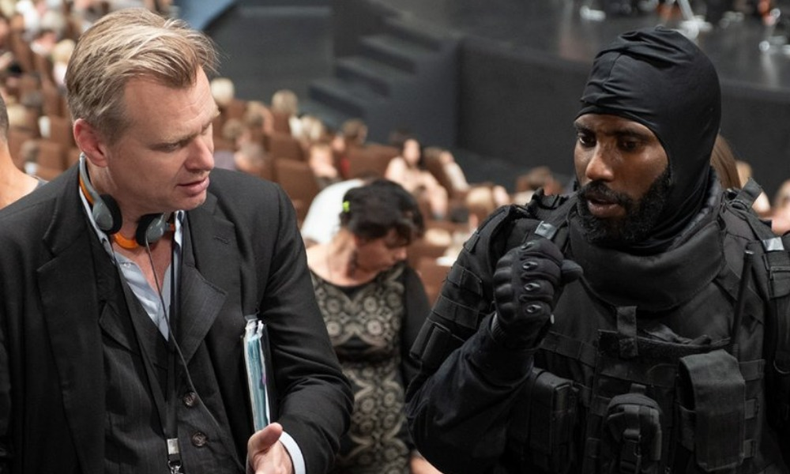
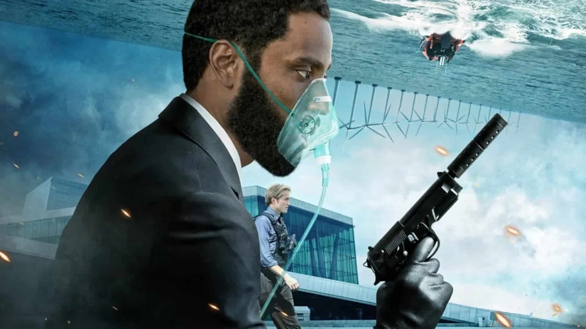

STORY LINE
A CIA agent, the "Protagonist", participates in an undercover operation at a Kyiv opera house. His life is saved by a masked soldier with a red trinket, who "un-fires" a bullet through a hostile gunman. After seizing an artifact, the Protagonist is captured by mercenaries. He endures torture before consuming cyanide. He awakens to learn that the cyanide was a test of his loyalty; his team has been killed, and the artifact lost. The Protagonist is recruited a secret organization called Tenet. A scientist shows him bullets with "inverted" entropy, which allows them to move backwards through time. She believes that they are manufactured in the future, and a weapon exists that can wipe out the past. Aided by a local contact Neil, the Protagonist traces the bullets to arms dealer Priya Singh. He discovers that she is a member of Tenet; her cartridges were purchased and inverted by Russian oligarch Andrei Sator.
TITLE : TENET
DIRECTOR : Christopher Nolan
STARS
John David Washington
Robert Pattinson
Elizabeth Debicki
Dimple Kapadia
Michael Caine
Kenneth Branagh
Genres: Action
AGE RESTRICTION : 16V
DURATION TIME : 1h:55 min
a brief synopsis of the movie
The Protagonist approaches Sator's estranged wife Kat, an art appraiser, who authenticated a Goya drawing forged by a man named "Arepo", which Sator thereafter purchased for $9 million from Arepo; Sator uses the drawing to blackmail her and keep her under his control. The Protagonist plots to steal the drawing with Neil from a free port facility in Oslo Airport. There they find a machine, a "turnstile", and fend off two masked men. Priya explains that the turnstile can invert the entropy of objects and people, and the masked men were the same person.
SHOWING TIME11 : 00am
DATE30 january 2021
 